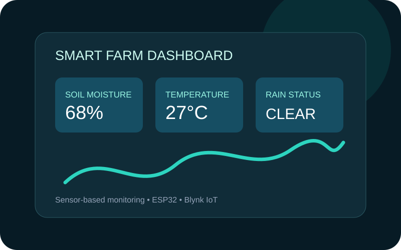

PROJECT DETAILS
Smart Agriculture Monitoring System
A learning and academic project concept focused on collecting environmental and field data using sensors connected to an ESP32. The intended system can display readings through a mobile or web dashboard and support manual control of a water pump through an IoT platform.

Project overview
A learning and academic project concept focused on collecting environmental and field data using sensors connected to an ESP32. The intended system can display readings through a mobile or web dashboard and support manual control of a water pump through an IoT platform.
Challenges & learning
Choosing suitable sensors, reading stable values, connecting the microcontroller to the IoT platform, and planning safe pump control are key development challenges to document as you implement and test the system.
Future improvements
Add calibrated sensor readings, historical charts, alerts, improved connectivity handling, and automated irrigation rules after testing.
Update this page with your actual implementation, screenshots, results, and personal experience before final submission. Do not claim features that you have not built or tested.